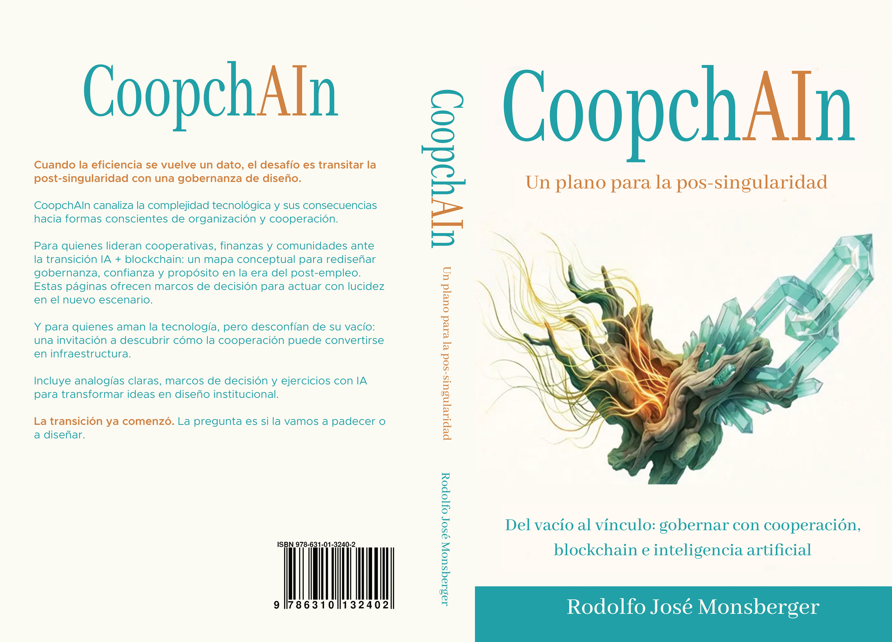

Triple singularidad
Tecnológica, económica y socio-cultural: tres umbrales que reordenan trabajo, identidad y gobernanza.
Libro + IA + comunidad
CoopchAIn explora cómo la cooperación, blockchain y la inteligencia artificial pueden converger en nuevas arquitecturas institucionales capaces de sostener sentido, gobernanza y comunidad en la era post-singularidad.
Este sitio funciona como una puerta de entrada al universo conceptual del libro: presenta su tesis central, ordena sus ideas fuerza y abre dos recorridos complementarios para profundizar el proyecto: dialogar con el libro y recorrer sus videos-resumen.

De qué trata
CoopchAIn parte de una idea central: la inteligencia artificial vuelve la eficiencia un dato del sistema; blockchain redistribuye infraestructura de confianza; y el cooperativismo ofrece una gramática institucional para que esa transición no derive ni en concentración extrema ni en fragmentación caótica.
El problema del futuro no es solamente técnico. Es cultural, institucional y organizacional: quién decide, con qué reglas, con qué límites y para qué propósito.

La home explica el núcleo rápido. Estas cuatro piezas ordenan la lectura y preparan al visitante para entrar al ecosistema digital del libro.
Tecnológica, económica y socio-cultural: tres umbrales que reordenan trabajo, identidad y gobernanza.
La inteligencia artificial concentra datos, escala y capacidad de decisión si no existen contrapesos institucionales.
Distribuye infraestructura de confianza y coordinación, pero también puede fragmentar sistemas si carece de gobernanza.
El cooperativismo aparece como arquitectura social capaz de sostener comunidad, agencia y distribución del valor.

Leer, dialogar y ver: tres puertas complementarias para que el visitante entre al proyecto con distintos niveles de profundidad.
Explora la tesis central, el marco conceptual y las hipótesis que conectan cooperación, blockchain e IA.
Accede a CoopchAIn GPT con glosario, preguntas frecuentes y una ruta guiada para profundizar ideas sin perder coherencia con el libro.
Abrir diálogoRevisa videos-resumen por capítulo y accede al canal coopchain_pro para seguir el desarrollo audiovisual del proyecto.
Ir a videos

Autor
Rodolfo José Monsberger es consultor internacional, emprendedor y capacitador especializado en finanzas, tecnología y transformación institucional.
Cuenta con más de 30 años de experiencia trabajando con bancos, cooperativas, fundaciones, organismos multilaterales y universidades en América Latina, Europa y Asia.
Es Licenciado en Administración (Universidad Nacional de Córdoba), MBA (Karl-Franzens-Universität Graz), Magíster en Banca y Finanzas Internacionales (Heriot-Watt University) y MSc en Fintech con First Class Honors (National College of Ireland).
Su trabajo se centra en la intersección entre cooperativismo, inteligencia artificial, blockchain y nuevos modelos de gobernanza en la economía digital.